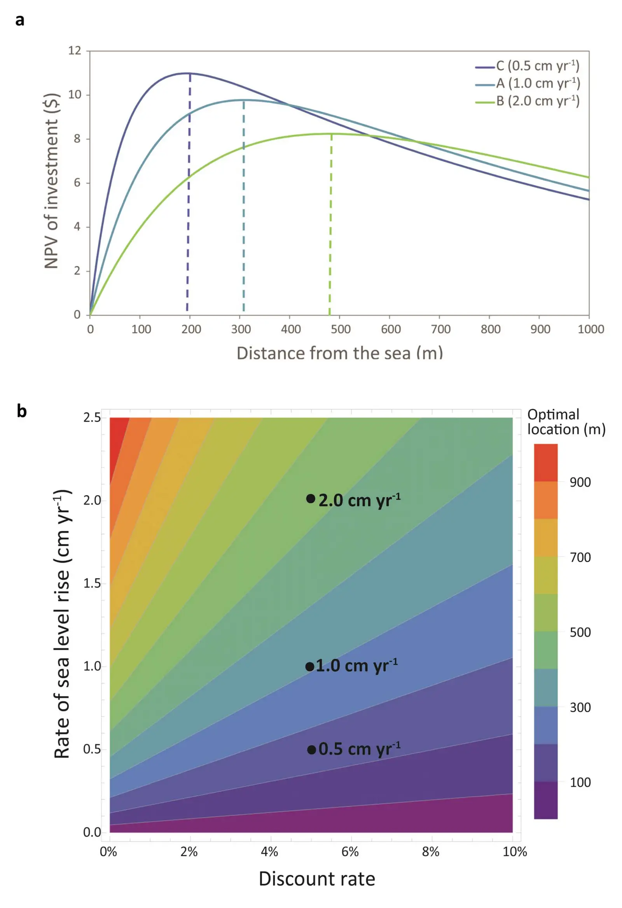

Adapting to rates versus amounts of climate change: a case of adaptation to sea-level rise
Key finding. Optimal coastal investment depends on the future *rate* of sea-level rise rather than on any particular amount of it, and a quantitative model shows the strategy emerging from the interplay of rate of rise, land slope, discount rate and depreciation rate — so adapting to an amount rather than an ongoing rate can misestimate both damages and the ability to respond.

What question did this research address?
Adaptation strategies are typically built to match a projected climate state: a sea level, a temperature, a rainfall regime. That framing assumes the climate arrives somewhere and stops.
It will not. Even under strong mitigation the climate continues changing far into the future, which means an investment sized for a particular sea level is obsolete before it depreciates. This paper asked what changes when adaptation is planned against a rate instead.
What did we find?
The worked example is investment in the face of continued sea-level rise, chosen because the physical and economic quantities are all measurable and the decision is concrete.
Four parameters govern the answer together: how fast the sea rises, how steeply the land slopes, how the decision-maker discounts the future, and how fast the built capital depreciates.
Depreciation is what links the two framings. Capital that wears out on a timescale comparable to the rate of change can be replaced as conditions move; capital that outlives the change it was built for cannot.
Social and political constraints enter the determination of the optimal strategy alongside the physical and economic ones.
The approach generalises beyond sea level to ongoing trends in temperature, precipitation and other variables.
Why does it matter?
It identifies a systematic bias rather than an error of degree. Designing for an amount of change treats a moving target as a fixed one, and the resulting estimates of damage and of adaptive capacity are wrong in a predictable direction.
Making depreciation central reframes adaptation as a question about the timing of investment rather than its size — which is the same insight that makes adaptation pay back faster than abatement.
Because it is the rate that matters, the value of mitigation shows up in adaptation planning too: slowing the change directly reduces what adaptation has to keep up with.
Citation, data, and code
Soheil Shayegh, Juan Moreno-Cruz, and Ken Caldeira (2016). Adapting to rates versus amounts of climate change: a case of adaptation to sea-level rise. Environmental Research Letters 11, 104007.
Related
- If cutting emissions pays for itself, why is it so hard to do?
- Near-term benefits from investment in climate adaptation complement long-term economic returns from emissions reduction (Duan et al., 2025)
- Move up or move over: mapping opportunities for climate adaptation in Pakistan's Indus plains (Schmitt et al., 2023)
- Combustion of available fossil fuel resources sufficient to eliminate the Antarctic Ice Sheet (Winkelmann et al., 2015)